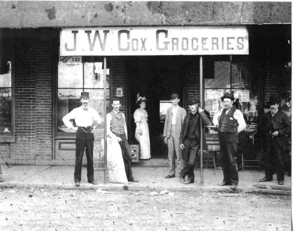
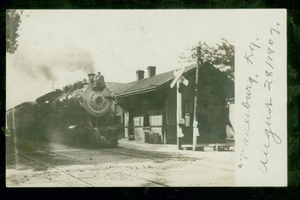
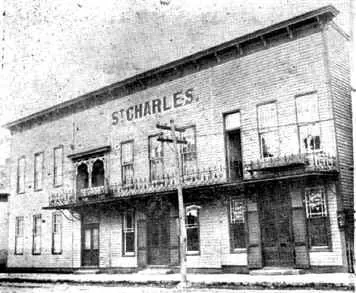
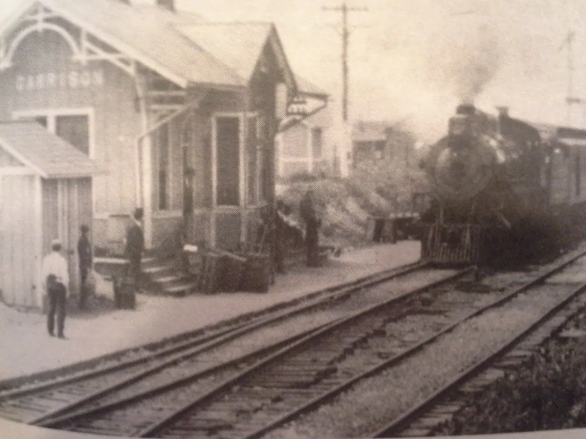
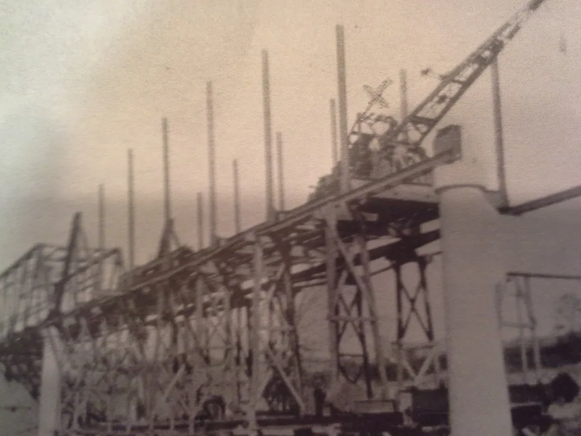
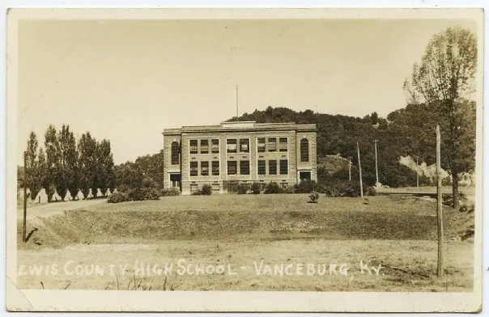

Old photographs of Lewis County
From the society's collection, oldest first.
1893

Cox Grocery, 1893. 1907

Vanceburg Depot, August 1907. 1926

The St. Charles Hotel, destroyed along with several other buildings on March 2, 1926. 1927

Garrison Depot, 1927. 1930–32

Garrison Bridge under construction, 1930–32. Undated

The old Lewis County High School.
Have an old photo or story?
The society accepts old photos, old stories, old newspaper clippings (prior to 1944), or anything you think may be of historical value. Please include your name, email address and a brief description of the photo, because the society may show it on its website for others to see, with your permission.
Email the society